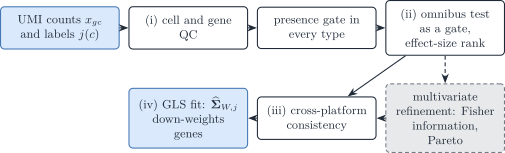
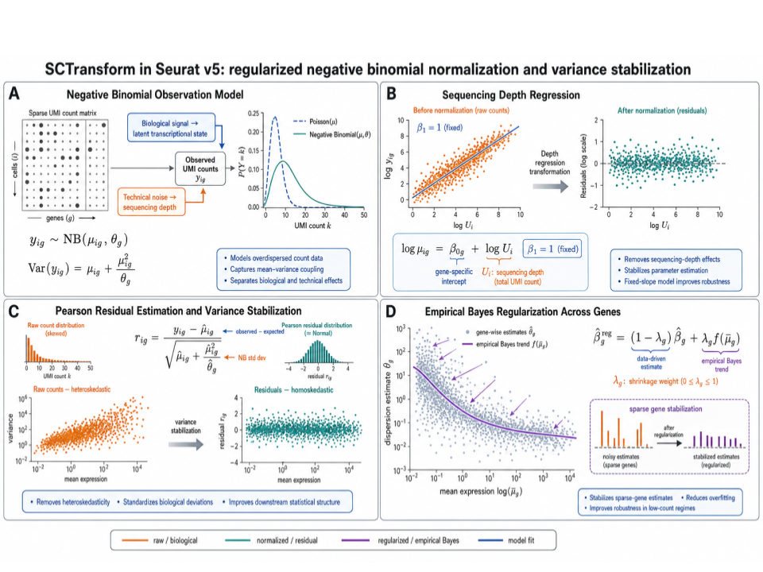
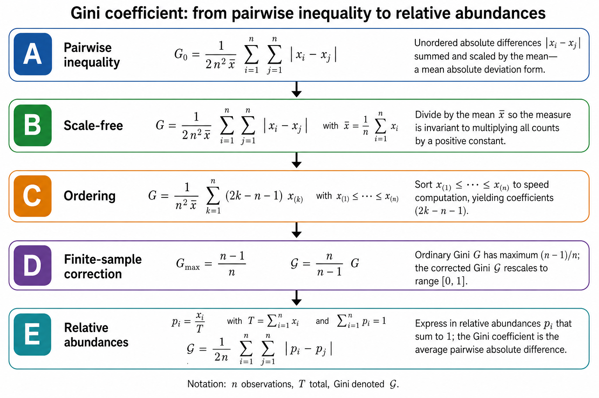
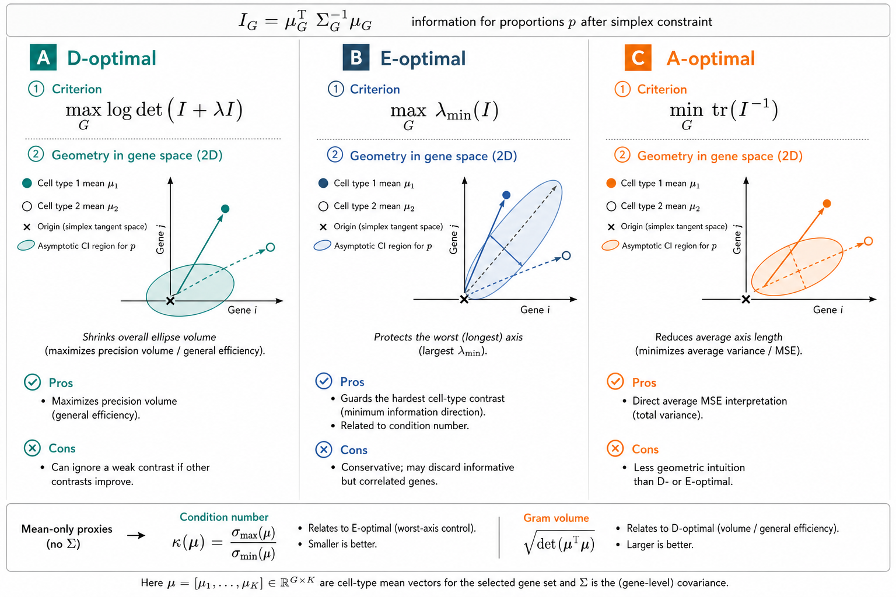
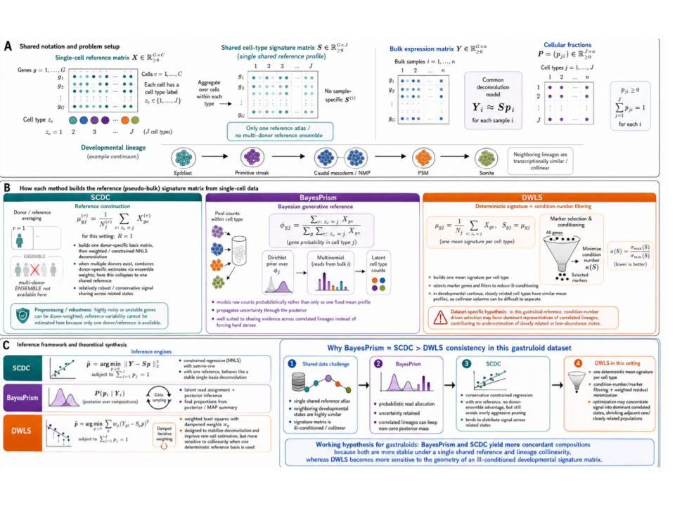
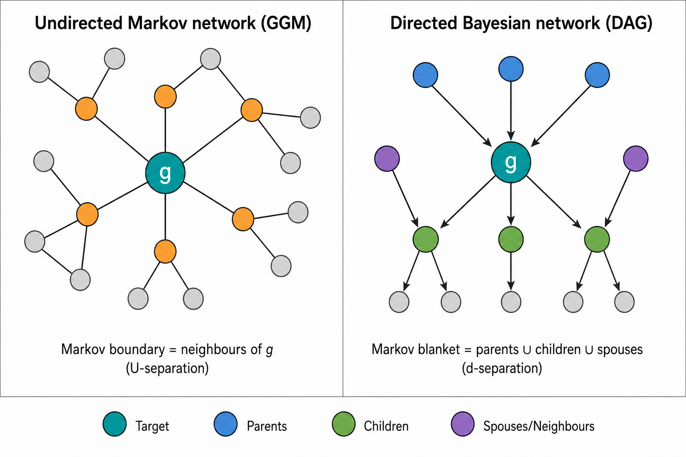

Notation (shared by all vignettes; aligned with the article)
Gene g=1,\ldots,G; cell type j=1,\ldots,J (a second type is \ell); bulk sample i=1,\ldots,N; reference donor (replicate) r=1,\ldots,R; cell c, with C_j reference cells of type j. The index i is dropped inside a derivation and restored in the model statements.
Symbol Meaning y_{gi}, \boldsymbol{y}_{\cdot i} Bulk expression on a linear scale m_{ji}, n_i=\sum_jm_{ji} Cells of type j in bulk sample i, and their total \tilde{\boldsymbol{y}}_{\cdot i}=\boldsymbol{y}_{\cdot i}/n_i Bulk expression per cell \boldsymbol{p}_{\cdot i}\in\Delta^{J-1} Cell fractions, p_{ji}=m_{ji}/n_i \boldsymbol{\rho}_{i}\in\mathbb{R}^{J-1} Isometric log-ratio (ILR) coordinates of \boldsymbol{p}_{\cdot i}, \boldsymbol{p}_{\cdot i}=\operatorname{softmax}(\mathbf{V}\boldsymbol{\rho}_i) with a Helmert basis \mathbf{V} \boldsymbol{q}_{\cdot i} Transcript fractions, q_{ji}=p_{ji}S_j/\sum_\ell p_{\ell i}S_\ell \boldsymbol{\mu}_{\cdot j}, \boldsymbol{\Sigma}_j Mean and G\times G gene–gene covariance of a type-j population profile \boldsymbol{\Omega}_j=\boldsymbol{\Sigma}_j^{-1} Precision matrix of type j \boldsymbol{\Gamma}_g J\times J covariance across cell types for gene g ( bMIND,EPIC-unmix,Unico)\boldsymbol{x}_{\cdot j,i} Purified profile of type j in sample i x_{gc}, \boldsymbol{x}_{\cdot c}, s_c Raw UMI count of gene g in reference cell c, and the size factor of cell c \boldsymbol{\lambda}_{\cdot c}, \boldsymbol{z}_{\cdot c} Size-free expression of cell c; its latent log-expression in the Poisson log-normal (PLN) model \tilde{\boldsymbol{\mu}}_{\cdot j}=C_j^{-1}\sum_{c\in j}\boldsymbol{x}_{\cdot c}=S_j\boldsymbol{\theta}_{\cdot j} Per-cell mean of the raw UMI counts of the C_j reference cells of type j \boldsymbol{\theta}_{\cdot j}, S_j=\mathbf{1}^{\top}\tilde{\boldsymbol{\mu}}_{\cdot j} Relative abundance (\mathbf{1}^{\top}\boldsymbol{\theta}_{\cdot j}=1) and mean transcriptome size of a type-j cell \boldsymbol{\Sigma}_{W,j}, \boldsymbol{\Sigma}_{B,j} Within-donor cell-to-cell covariance of type j (one single-cell sample); between-donor covariance of type j (needs R\ge2 donors) \boldsymbol{S}_W(\boldsymbol{v})=\sum_jv_j\boldsymbol{\Sigma}_{W,j}, \boldsymbol{S}_B(\boldsymbol{v})=\sum_jv_j^2\boldsymbol{\Sigma}_{B,j} Linear and quadratic covariance mixtures with weights \boldsymbol{v} \boldsymbol{V}_j Empirical covariance of type j, computed from its reference profiles or cells \boldsymbol{R}_j Empirical correlation matrix of type j (bold; the scalar R is the number of donors) \boldsymbol{\Delta}_j=\operatorname{diag}(\boldsymbol{V}_j) Diagonal matrix of the empirical variances of type j \lambda Penalty of a regularised covariance or precision estimator \psi_g, \mathcal{D}_g Negative binomial dispersion of gene g; deviance of gene g in a count model \delta_{gj} Detection rate of gene g in type j (fraction of cells with a non-zero count) \varpi_{\ell\mid j}, \varpi_{j\ell}, \bar\varpi MixSim overlap: probability of misclassifying a draw of j into \ell, pairwise overlap \varpi_{j\ell}=\varpi_{\ell\mid j}+\varpi_{j\mid\ell}, and its average over pairs ( BarOmega)\boldsymbol{T}_{ji}=\sum_{c=1}^{m_{ji}}\boldsymbol{X}_{jic} Total expression contributed by type j to sample i a_i Sample-wide scale between the reference and the bulk library c_i=a_in_i, \phi_i=a_i^2n_i Mean scale and variance scale of the single-cell model b_g, \tilde b_g=b_g^{\mathrm{bulk}}/b_g^{\mathrm{ref}} Capture efficiency of gene g in one protocol, and the gene-wise platform ratio; \tilde{\boldsymbol{B}}=\operatorname{diag}(\tilde{\boldsymbol{b}}) \boldsymbol{D}_i Diagonal, heteroscedastic bulk measurement noise A tilde marks a quantity rescaled to a reference unit: per cell (\tilde{\boldsymbol{y}}, \tilde{\boldsymbol{\mu}}) or relative to the reference protocol (\tilde{\boldsymbol{b}}). \boldsymbol{\Sigma}_j couples genes within one cell type; \boldsymbol{\Gamma}_g couples cell types within one gene. A symbol absent from this table is defined in the vignette that uses it, with one meaning there.
Scope
This chapter states which genes should enter a DeCovarT reference built from single-cell data, and why. It holds the theory: the estimand, the four tiers of selection, the statistical tests behind them, and a review of how second-generation deconvolution methods choose their genes (Gaspard-Boulinc et al. 2025; Avila Cobos et al. 2018). The application to the Suppinger gastruloids (filters as applied, settings, rank tables, code) is in the feature-selection chapter of the reproducibility book. Strategies compared on simulated references are in Appendix S6. Marker-based abundance scores (enrichment modules) are out of scope (Aran et al. 2017).
Local symbols. C=\sum_jC_j is the number of reference cells in one time slot; j(c) is the label of cell c. \delta_{gj}=C_j^{-1}\sum_{c:j(c)=j}\mathbb{1}(x_{gc}>0) is the detection rate of gene g in type j, and v_{gj} is the g-th diagonal entry of \boldsymbol{V}_j. In a negative-binomial (NB) model \psi_g is the dispersion, so that \operatorname{Var}(x_{gc})=m_{gc}+m_{gc}^2/\psi_g with m_{gc}=\operatorname{E}(x_{gc}); \mathcal{D}_g(M) is the deviance of model M for gene g; r_{gc} is a Pearson residual. A gene panel is written \mathcal{G}\subseteq\{1,\ldots,G\}.

Figure 1: “Four tiers of gene selection for a DeCovarT reference. Tiers (i) to (iii) remove genes; tier (iv) keeps the remaining genes and lets the fitted covariance down-weight them. The dashed box is the optional multivariate refinement.”
1 Estimand: what the genes are for
The target is a set of genes that makes the reference moments (\boldsymbol{\mu}_{\cdot j},\boldsymbol{\Sigma}_{W,j}) estimable and informative about \boldsymbol{p}. This is not population-level differential expression, for three reasons.
- One specimen. The Suppinger reference is one technical scRNA-seq experiment (Suppinger et al. 2023). Its cells are draws from one specimen, not biological replicates, so every p-value below calibrates a screen inside that specimen. Treating cells as replicates of a population contrast inflates the false discoveries (Zimmerman et al. 2021; Squair et al. 2021; Crowell et al. 2020). Only the within-donor covariance \boldsymbol{\Sigma}_{W,j} is estimable; the between-donor part needs R\ge2 donors (2.1).
- Labels are given. A test of the type effect is valid only if the labels were fixed before the statistic is computed. Labels obtained by clustering the same matrix make the test anti-conservative (post-clustering inference, González-Delgado et al. 2025) .
- Linear scale. Transforms (logarithms, Pearson residuals, nonparanormal scores) may rank genes; the exported moments stay on the linear scale on which the convolution holds (2.1; Sturm et al. (2019)).
Selection proceeds in four tiers (Figure 1): (i) quality control and a presence gate; (ii) marker-gene consistency, an omnibus test used as a gate and an effect-size rank; (iii) consistency between the reference and bulk platforms; (iv) down-weighting by the model instead of removal. Tiers (i) to (iii) are filters; tier (iv) is part of the likelihood. Feature selection as a pre-modelling filter has the usual caveats (Guyon and Elisseeff 2003): it is a proposal, to be checked by out-of-sample deconvolution error (S6).
2 Tier (i): quality control
QC removes cells and genes that lie outside the support of any expression model. The thresholds below are examples from the reviewed methods (Section 8), not defaults of DeCovarT.
- Cells. Library size more than 3 median absolute deviations (MAD) from the median of its type, and cells more than 3 MAD from the median pairwise distance within their type (RNA-Sieve, optional; Erdmann-Pham et al. (2021), supplement p. 3). Fewer than 500 UMIs, fewer than 200 detected genes, or more than 50 % mitochondrial UMIs (deMixSC; Guo et al. (2023), p. 11).
- Genes. Ribosomal, mitochondrial and sex-chromosome genes, which reflect cell survival and donor sex rather than type (BayesPrism; Chu et al. (2022), supplement pp. 14, 19). Genes detected in fewer than 20 % of the cells of every type (RNA-Sieve, supplement p. 3).
QC differs from tier (iv): a QC rule removes an observation that no model in the ladder would fit, whereas down-weighting keeps an observation the model can explain with a larger variance. For the Suppinger data the authors’ QC and the gene allow-list are reported as applied in the book; no further cell filter is claimed here.
2.1 Presence gate in every type
A gene enters tier (ii) only if
\min_{j}\delta_{gj}\ge\delta_{\min} \quad\text{and}\quad \min_{j}v_{gj}>0, \tag{1}
with \delta_{\min} a few per cent (for example 0.05), fixed before the ranks are seen. The gate is a design constraint, for three reasons.
- Covariance. A gene with v_{gj}=0 gives a zero row and column in \boldsymbol{V}_j. \boldsymbol{\Sigma}_{W,j} is then singular on that coordinate, and the precision of type j is undefined.
- Identifiability. A gene expressed in one type only is the perfect marker of classical signatures (Newman et al. 2019). MEAD shows that \boldsymbol{P} is not identifiable when all genes are perfect markers and gene-wise platform ratios are allowed: rescaling the ratios of the markers of type j by \delta_j is absorbed by the proportions (Xie et al. 2026, 7). A gate in every type excludes these genes.
- Testing. With an all-zero type the NB estimate \hat\beta_{gj}\to-\infty, its standard error grows faster, and the Wald statistic shrinks as the effect grows (Hauck–Donner effect) (Yee 2022). Likelihood-ratio and score statistics stay finite (Section 3.2).
3 Tier (ii): marker-gene consistency
MuSiC introduced “marker gene consistency” with two parts: cross-subject consistency, which guards against the choice of subjects, and cross-cell consistency, which guards against biased cell capture (Wang et al. 2019, 2). Cross-cell consistent genes are those with low within-cluster variance (Wang et al. 2019, 3). With one specimen only cross-cell consistency can be assessed. Its natural statistic is the split of a gene’s variation into between-type and within-type parts.
3.1 Pearson residuals and the between/within split
The technical null fits each gene with library size as the only covariate,
M_{0}:\; \log m_{gc}=\beta_{0g}+\log s_{c}, \qquad x_{gc}\sim\mathrm{NB}(m_{gc},\psi_{g}), \tag{2}
which is the model of SCTransform with vst.flavor = "v2", where the depth slope is fixed and library size is an offset (Hafemeister and Satija 2019; Lause et al. 2021). Cell type is deliberately absent: putting j in the null would remove the signal to be ranked. The Pearson residuals r_{gc}=(x_{gc}-\hat m_{gc})/\sqrt{\hat m_{gc}+\hat m_{gc}^{2}/\hat\psi_{g}} split as
\mathrm{SS}_{\mathrm{B},g} = \sum_{j=1}^{J}C_{j}\bigl(\bar r_{gj}-\bar r_{g}\bigr)^{2}, \qquad \mathrm{SS}_{\mathrm{W},g} = \sum_{j=1}^{J}\sum_{c:j(c)=j}\bigl(r_{gc}-\bar r_{gj}\bigr)^{2}, \tag{3}
with \bar r_{gj} the mean residual in type j and \bar r_{g} the overall mean (\approx0). A lineage marker has a large between-type and a small within-type part; a stress-response gene can have a large total residual variance and still a small between-type part.

SCTransform workflow: negative-binomial mean–variance model, depth regression, Pearson residuals, and empirical-Bayes regularisation across genes.
The sums in Equation 3 weight every cell equally, so the most abundant type dominates them. The equal-type version gives each type weight 1/J:
\mathrm{MS}^{\mathrm{eq}}_{\mathrm{B},g} = \frac1J\sum_{j=1}^{J}\Bigl(\bar r_{gj}-\frac1J\sum_{\ell=1}^{J}\bar r_{g\ell}\Bigr)^{2}, \qquad \mathrm{MS}^{\mathrm{eq}}_{\mathrm{W},g} = \frac1J\sum_{j=1}^{J}\operatorname{var}_{c:j(c)=j}(r_{gc}). \tag{4}
3.2 Omnibus test: deviance, score and quasi-likelihood F
Add the type main effect to Equation 2:
M_{1}:\; \log m_{gc}=\beta_{0g}+\beta_{g,j(c)}+\log s_{c}, \qquad \beta_{g1}=0, \qquad H_{0g}:\beta_{g2}=\cdots=\beta_{gJ}=0 . \tag{5}
The joint null has J-1 degrees of freedom, and the three classical tests apply (Agresti 2015). One omnibus test per gene replaces \binom{J}{2} pairwise or J one-versus-rest tests, and a single Benjamini–Hochberg correction across genes follows.
Likelihood ratio (analysis of deviance). \Lambda_g=\mathcal{D}_g(M_0)-\mathcal{D}_g(M_1), referred to \chi^2_{J-1} when \psi_g is known.
-
Score (Rao). It needs only the M_0 fit, the one
SCTransformalready computes. With the log link the IRLS weight is w_{gc}=\hat m_{gc}^2/V(\hat m_{gc}), V(m)=m+m^2/\psi_g, and the score of the type-j indicator is U_{gj}=\sum_{c:j(c)=j}\sqrt{w_{gc}}\,r_{gc}. With the intercept profiled out,T_{g} = \sum_{j=1}^{J}\frac{U_{gj}^{2}}{\sum_{c:j(c)=j}w_{gc}} \;\approx\; \sum_{j=1}^{J}C_{j}\,\bar r_{gj}^{2} \approx \mathrm{SS}_{\mathrm{B},g}, \tag{6}
where the approximation holds when the weights are nearly constant within a type. For a Poisson null, U_{gj} is observed minus expected counts in type j and T_g is Pearson’s \chi^2 on the type totals. The between-type sum of squares of Pearson residuals is therefore, up to weight heterogeneity, the score statistic of the cell-type effect.
Wald. It needs M_1 only and fails near the boundary (Section 2.1).
Quasi-likelihood F. Dividing T_g/(J-1) by the within-type Pearson dispersion \hat\phi_g=\mathrm{SS}_{\mathrm{W},g}/(C-J) gives
F_{g} = \frac{\mathrm{SS}_{\mathrm{B},g}/(J-1)}{\mathrm{SS}_{\mathrm{W},g}/(C-J)}, \tag{7}
the one-way ANOVA ratio (Wang et al. 2010). In GLM terms it is a quasi-likelihood F test: the mean model Equation 5 and the variance function V are kept, and a scalar \phi_g absorbs a variance larger or smaller than V predicts. The reference F_{J-1,C-J} accounts for estimating \phi_g, as in the edgeR quasi-likelihood pipeline and in glmGamPoi::test_de() (Lund et al. 2012; Ahlmann-Eltze and Huber 2020). Three consequences follow.
- Keep overdispersed genes. Within-type overdispersion is the within-type scatter that the denominator already penalises, and the covariance that DeCovarT models. Removing such genes before the test removes that signal.
- A scalar \phi_g cannot absorb a wrong variance function. Under a Poisson null it cannot absorb the quadratic NB term, whose share grows with the type mean; the pooled \hat\phi_g is then wrong for every type. Use the NB variance, so that \phi_g\approx1 in every type; if between-type heteroscedasticity remains, use a Welch-type statistic or the equal-type mean squares of Equation 4.
- Same order within a slot. J and C are shared by all genes of a slot, so F_g is a monotone function of \mathrm{SS}_{\mathrm{B},g}/\mathrm{SS}_{\mathrm{W},g}; the analytic F adds a threshold, not a new ranking.
When the NB variance function itself fails, quasi-likelihood with an empirical variance function is the fallback (Agresti 2015). When the shape differs between types (types that share a mean but differ in dispersion), a location–scale model with type-specific \psi_{gj} tests both, on 2(J-1) degrees of freedom; this is the GAMLSS margin used by scDesign3 (Song et al. 2024), Stasinopoulos & Rigby (2007) .
3.2.1 Calibration: permutation, Freedman–Lane, bootstrap
The nominal F_{J-1,C-J} tail is optimistic on SCTransform output for three reasons: residuals are clipped at \pm\sqrt{C/30}, \psi_g is regularised across genes and so is misspecified for any one gene, and residuals at low means are discrete and skewed (Hafemeister and Satija 2019; Lause et al. 2021). A permutation null keeps F_g and replaces its reference distribution.
- Permute labels, not genes. One permutation of the cell labels is applied to all genes at once. Each gene keeps its marginal distribution and its dependence on the other genes; only the link with the label is broken. Shuffling genes, or shuffling within cells, does not produce that null.
- Nuisance covariates. With covariates (batch, cell line, cell cycle), a global label shuffle creates impossible combinations. The Freedman–Lane scheme fits the reduced model without type, permutes its residuals with one row permutation shared by all genes, adds them back to the reduced fit, refits the full model and recomputes F_g (Freedman and Lane 1983).
- Bootstrap answers another question. A nonparametric bootstrap of cells within type resamples under the observed effects: it measures the stability of the ranks and the uncertainty of an effect size, in the spirit of stability selection (Meinshausen and Bühlmann 2010), not a null distribution. A parametric bootstrap of \Lambda_g under the fitted M_0 checks the \chi^2_{J-1} approximation for small types.
3.3 Gate, then rank by effect size
With thousands of cells nearly every expressed gene rejects H_{0g}, and p-values only order genes by C\times effect. The test is therefore a gate (FDR on permutation or quasi-likelihood p-values, after Equation 1), and genes are ranked by an effect size with equal type weights:
- the between-type share \eta^2_g=\mathrm{SS}_{\mathrm{B},g}/(\mathrm{SS}_{\mathrm{B},g}+\mathrm{SS}_{\mathrm{W},g}), or its equal-type analogue from Equation 4;
- the deviance explained R^{2}_{\mathcal{D},g}=1-\mathcal{D}_g(M_1)/\mathcal{D}_g(M_0);
- the smallest pairwise Hellinger distance between the type-specific laws of the gene (4.2), which also sees types that share a mean and differ in variance.
3.3.1 Specificity scores for one-versus-rest lists
Long one-versus-rest lists are often compacted with the entropy or the Gini coefficient of the type shares u_{gj}=\mu_{gj}/\sum_{\ell}\mu_{g\ell} (Zhang et al. 2017):
H_g=-\sum_{j=1}^{J}u_{gj}\log u_{gj}, \qquad \mathrm{Gini}_g = \frac{1}{2J}\sum_{j=1}^{J}\sum_{\ell=1}^{J}\lvert u_{gj}-u_{g\ell}\rvert = \frac1J\sum_{k=1}^{J}(2k-J-1)\,u_{g(k)}, \tag{8}
with 0\log0=0 and u_{g(1)}\le\cdots\le u_{g(J)}. H_g/\log J and J\,\mathrm{Gini}_g/(J-1) lie in [0,1]; low entropy and high Gini mean that few types carry the mass. Both scores reward exclusive expression, which the presence gate (Section 2.1) excludes, and neither sees redundancy between genes (Section 4.3).

3.4 Leverage is not influence
Residual size, leverage and influence are three different quantities (Agresti 2015). In a gene-wise GLM, leverage belongs to the observations (cells, or pseudo-bulk samples), not to the gene. For the one-way design of Equation 5 the hat value of cell c is h_{gc}=w_{gc}/\sum_{c':j(c')=j(c)}w_{gc'}: every cell of a rare type, and every cell with a large fitted mean, has high leverage. Influence combines the two; Cook’s distance is
\mathrm{Cook}_{gc} = \frac{r_{gc}^{2}\,h_{gc}}{J\,\hat\phi_g\,(1-h_{gc})^{2}} .
A high-expression marker in a small type sits at an extreme fitted mean and has high leverage, yet it agrees with the type effect: it is informative, not an outlier. Rules that clip by size alone, such as residual clipping or SCDC’s clipping of variance weights at the 15th and 85th percentiles (Dong et al. 2021, 10), shrink these observations with the harmful ones. An observation is a candidate outlier only when both its leverage and its standardised residual are large.
3.5 Critiques of current marker rules
The reviewed marker rules (Table 2) depart from the model above in four ways.
-
Hurdle models on droplet counts. DWLS defines markers with the
MASThurdle model (Tsoucas et al. 2019, 7). Droplet UMI counts show no zero inflation beyond what the NB predicts (Svensson 2020) , and current data do not support zero-inflated measurement models (Sarkar and Stephens 2021, 5). The hurdle splits one count into a detection and a magnitude test (Finak et al. 2015) where one NB test of Equation 5 suffices. - Gaussian t-tests on counts. ReDeconv uses a two-sample t-test between cells (Lu et al. 2025, 14); deMixSC uses a paired t-test of bulk against matched pseudo-bulk (Guo et al. 2023, 12).
- Cells as independent replicates. Every test above that runs on cells (DWLS, ReDeconv, BayesPrism’s marker option) treats them as replicates of a population contrast (Section 1).
- No multiplicity control. ReDeconv keeps genes with p<0.05 in each comparison against every other type, with no FDR correction (Lu et al. 2025, 14).
4 Screen versus objective: multivariate selection
The advanced stage treats \mathcal{G} as a subset selection problem on the full J-column signature. It comes after GRN inference (?@sec-grn-top4), because the second objective uses \boldsymbol{\Sigma}_{j}. The loss is defined on all types jointly. That is the right geometry for DeCovarT: the likelihood depends on \boldsymbol{\mu}\boldsymbol{p} and on \sum_{j}p_{j}^{2}\boldsymbol{\Sigma}_{j}.
4.1 The ANOVA ratio is the right screen, not the right objective
Take J=2, one gene, the population model of DeCovarT (1.2) and equal within-type variances \sigma_g^2. Then y_g\sim\mathcal{N}\bigl(p\mu_{g1}+(1-p)\mu_{g2},\,\sigma_g^2 s(p)\bigr) with s(p)=p^2+(1-p)^2, and the Fisher information for p is
I_g(p) = \frac{\Delta_g^{2}}{s(p)} + \frac12\Bigl(\frac{s'(p)}{s(p)}\Bigr)^{2}, \qquad \Delta_g=\frac{\mu_{g1}-\mu_{g2}}{\sigma_g}. \tag{9}
The second term is the same for every gene. Computed on the scale of the model, the ratio Equation 7 estimates \Delta_g^2: F_g is non-central F_{1,C-2} with non-centrality \tilde C\Delta_g^{2}, \tilde C=C_1C_2/C, so \operatorname{E}F_g\approx1+\tilde C\Delta_g^2. Under these conditions, ranking genes by F_g ranks them by I_g(p) at every p, and with independent genes the top-k genes by F_g maximise the total information \sum_{g\in\mathcal{G}}I_g(p). This identity is pending a symbolic check (ledger V4). The agreement holds only when genes are independent and homoscedastic across types. The ratio ignores:
- redundancy and collinearity. Two genes that separate the same pair of types add little information together, and concatenated one-versus-rest lists inflate the condition number of \boldsymbol{\mu}_{\mathcal{G}} (Section 4.3);
- the covariance DeCovarT models. With \sigma_{g1}\ne\sigma_{g2} the information depends on p through p^2\sigma_{g1}^2+(1-p)^2\sigma_{g2}^2, and with correlated genes it is not a sum over genes;
- the count mean–variance relation, unless the ratio is computed on residuals of a model with the right variance function (Section 3.2).
The univariate ratio is therefore a screen. The objective for a panel is the Fisher information for \boldsymbol{p} of the whole panel.
4.2 Fisher information for \boldsymbol{p} as the objective
For a panel \mathcal{G}, restrict the rows of \boldsymbol{\mu} and the rows and columns of \boldsymbol{\Sigma}_j to \mathcal{G} and compute I_{\mathcal{G}}(\boldsymbol{p}) from 1.2, Eq. for I(\boldsymbol{p}), mapped to the J-1 free coordinates of the simplex. Because \boldsymbol{\Sigma}(\boldsymbol{p}) depends on \boldsymbol{p}, a panel is scored over a composition grid \mathcal{P}\subset\Delta^{J-1} (balanced, rare-type, sparse and near-collinear compositions), and the classical criteria (Atkinson and Donev 1992; Pukelsheim 2006) become
\max_{\mathcal{G}}\min_{\boldsymbol{p}\in\mathcal{P}} \log\det I_{\mathcal{G}}(\boldsymbol{p}) \ \text{(robust D)}, \qquad \max_{\mathcal{G}}\min_{\boldsymbol{p}\in\mathcal{P}} \lambda_{\min}\bigl(I_{\mathcal{G}}(\boldsymbol{p})\bigr) \ \text{(E)}, \qquad \min_{\mathcal{G}}\max_{\boldsymbol{p}\in\mathcal{P}} \operatorname{tr}I_{\mathcal{G}}(\boldsymbol{p})^{-1} \ \text{(A)}. \tag{10}
D-optimality shrinks the volume of the confidence ellipsoid for \boldsymbol{p} and can leave one weak contrast; E-optimality protects the worst contrast; A-optimality minimises the average variance (Figure 4). If \boldsymbol{\Sigma}_{\mathcal{G}}(\boldsymbol{p}) is replaced by the identity, I_{\mathcal{G}} reduces to the Gram matrix of the contrasted mean columns: D-optimality maximises the Gram volume and E-optimality is close to minimising the condition number (Section 4.3.1; 4.1).

This objective stays optional: it needs \widehat{\boldsymbol{\Sigma}}_{W,j} on the candidate genes, hence the covariance estimation of 3.2 on a shortlist that tier (ii) has already produced. The search itself (greedy exchange, NSGA-II) and its settings are in S6.
4.3 Condition number and its limits
The 2-norm condition number of a design matrix,
\kappa_2(\boldsymbol{X})=\frac{\sigma_{\max}(\boldsymbol{X})}{\sigma_{\min}(\boldsymbol{X})}, \tag{11}
is the classical panel criterion: CIBERSORT and DWLS keep the candidate signature with the smallest \kappa_2(\boldsymbol{\mu}_{\mathcal{G}}) (Newman et al. 2015; Tsoucas et al. 2019, 7; Gong and Szustakowski 2013). Note that \kappa_2(\boldsymbol{X}^{\top}\boldsymbol{X})=\kappa_2(\boldsymbol{X})^2. The criterion sees the means only.
In a continuum (gastruloids, differentiation trajectories) neighbouring types have nearly collinear means by construction, so \kappa_2 is large whatever the panel, and minimising it keeps a few dominant lineages and drops the genes that separate neighbours through their covariance (Figure 5). Use \kappa_2 as a diagnostic of the mean geometry, next to the information criteria of Equation 10. Mean-only pruning then under-represents adjacent or low-abundance states — exactly the types whose rewiring DeCovarT is meant to exploit.

4.3.1 Variance-weighted condition number
With gene-wise uncertainties \tau_g^2 (biological, sampling and optional reference-to-bulk discrepancy), standardise the rows and evaluate the conditioning in the (J-1)-dimensional contrast space induced by \sum_jp_j=1:
\kappa_2\bigl(\boldsymbol{T}_{\mathcal{G}}^{-1/2}\boldsymbol{\mu}_{\mathcal{G}}\boldsymbol{K}\bigr), \qquad \boldsymbol{T}_{\mathcal{G}}=\operatorname{diag}(\tau_g^2)_{g\in\mathcal{G}}, \tag{12}
where the J\times(J-1) matrix \boldsymbol{K} has orthonormal columns orthogonal to \mathbf{1}. Unweighted \kappa_2 can favour quiet but biased genes. Equation 12 is the identity-covariance special case of the information criteria above: it uses a diagonal covariance, so it still misses the covariance-only regime in which DeCovarT identifies types whose means agree (1.2).
4.4 Pareto search over several criteria
AutoGeneS searches gene subsets with a multi-objective genetic algorithm that minimises the correlation between type centroids and maximises their distance (Aliee and Theis 2021).
For DeCovarT the objectives are \kappa_2(\boldsymbol{\mu}_{\mathcal{G}}) (mean geometry) and the average pairwise overlap \bar\varpi of the type laws \mathcal{N}(\boldsymbol{\mu}_{\cdot j},\boldsymbol{\Sigma}_j) restricted to \mathcal{G} (Melnykov et al. 2012). The overlap and the other separation measures (Hellinger, Bhattacharyya, Jeffreys, affine-invariant distance) are defined in 4.2; unlike the AutoGeneS objectives they use both means and covariances.
The robust D-criterion of Equation 10 is a third, DeCovarT-specific objective, best used to choose among non-dominated panels. The two kinds of criteria need not agree: overlap measures how well the type laws can be told apart, Fisher information how well \boldsymbol{p} can be estimated. A Pareto front of non-dominated panels is reported instead of one weighted score (Mersmann 2024).
Note 1: ℹ️ A DeCovarT-specific third objective (proposal)
Adding Fisher identifiability of \boldsymbol{p} by maximising the smallest eigenvalue of the mixture information I_{\mathcal{G}}(\boldsymbol{p}), or minimise its condition number is new in the literature corpus; it is a composition of the Fisher information for \boldsymbol{p} as the objective.
For this repository the planned optimiser is NSGA-II via mco::nsga2() (Mersmann 2024). Encode genes as a mask in [0,1]^{|\mathcal{G}_{0}|} (thresholded to a target size). Minimise at least
- \kappa_{2}(\boldsymbol{\mu}_{\mathcal{G}}) (mean geometry);
- average pairwise overlap \overline{\omega} of the J Gaussians \mathcal{N}(\boldsymbol{\mu}_{\cdot j},\boldsymbol{\Sigma}_{j}) (Melnykov et al. 2012, 2024).
4.5 Seeds and Markov boundaries
A panel can also grow from a few seeds (strong markers, genes with a large contribution to I_{\mathcal{G}}) by their neighbours in a fitted graphical model of one type. A Markov blanket of gene g is any set that makes g conditionally independent of the other genes; a Markov boundary is a minimal blanket. For a positive distribution the boundary is unique and equals the neighbour set of g in the minimal undirected I-map (Pearl 1988; Koller and Friedman 2009). In a Gaussian graphical model these are the genes g' with \omega_{gg'}\ne0 in \boldsymbol{\Omega}_j (Bolin et al. 2026), if the fitted graph is taken as the minimal I-map. The construction uses undirected separation; directed d-separation, with its colliders, belongs to DAGs and is a different operation (Figure 6). Boundary expansion can reintroduce collinear means, so the expanded set returns to the Pareto stage.

Genes that change neighbourhood between types (differential networks, INDEED, D-trace, cooperative penalties) are a further source of candidates. Their theory is in 3.3, joint and differential networks; on one specimen their permutation nulls are technical nulls (Section 1).
4.6 Multivariate tests
A multivariate test would replace the G gene-wise nulls by one null on the vector \boldsymbol{x}_{\cdot c}. Two routes are often confused.
- Gene-wise GEE is still gene-wise. GEE extends the quasi-score to a vector of correlated observations, with a working covariance (Liang & Zeger 1986) . Fitted once per gene, it still returns G p-values and still needs FDR control: correlation-aware inference does not remove multiplicity.
- A joint test needs \boldsymbol{\Sigma}_j. A Hotelling or MANOVA test of equal type means on the panel uses the within-type covariance, which is high-dimensional when C_j is not much larger than |\mathcal{G}|, the regime of several Suppinger types (3.2). With a regularised \widehat{\boldsymbol{\Sigma}}_{W,j} such a test is possible on a shortlist, but its calibration is open; it is a perspective, not part of the pipeline.
5 Tier (iii): cross-platform consistency
A gene can be a perfect cross-cell marker and still be measured differently by the reference and the bulk protocol. The reviewed methods handle this in four ways.
-
Range bound (RNA-Sieve). Per cell, the bulk is a convex combination of the type means, so on a common scale
\min_{j}\tilde\mu_{gj}\;\le\;\tilde y_{g}\;\le\;\max_{j}\tilde\mu_{gj} \tag{13}
up to sampling error. RNA-Sieve removes genes whose bulk value falls outside this range by more than a sub-Gaussian tail bound allows, and genes that are MAD outliers on four summary statistics (largest type mean, largest type standard deviation, largest coefficient of variation, and a bulk-to-reference ratio) (Erdmann-Pham et al. 2021, 10–11, Eqs. 12–13). The bound holds for any weights on the simplex, so it does not depend on whether \boldsymbol{p} or \boldsymbol{q} is the target. A gene-wise platform ratio \tilde b_g far from 1 moves the bulk outside the range; the filter detects that case.
Test against a matched benchmark (deMixSC). A paired t-test of real bulk against pseudo-bulk of the same aliquots, with BH at 0.05; the discrepant genes are kept and down-weighted by a fixed factor a=1000 (Guo et al. 2023, 12).
Gene-wise platform ratios in the model. MEAD lets the ratios vary by gene with mean 1 (Xie et al. 2026, 8); RCTD uses a gene-wise platform random effect, estimated once from a pooled pseudo-bulk and then fixed (Cable et al. 2022, 6–8); MuSiC allows a gene- and subject-specific intercept (Wang et al. 2019, 7).
Normalisation only. ReDeconv applies gene-length normalisation to the bulk only (Lu et al. 2025, 2).
Suppinger. The single-cell reference matches only the bulk of the standard Wnt schedule at 48 h. The early-Wnt bulk at 24 h has no single-cell counterpart, so no bulk–reference comparison is possible there. A consistency filter (range bound and MAD flags of Equation 13) can therefore be fitted only at 48 h. Applying the genes it flags at every time assumes that platform effects are properties of the gene that do not change with time; this assumption is stated, not tested. Modelling a gene-wise or module-wise scale \tilde b_g inside DeCovarT is a perspective of 5.3.
6 Tier (iv): down-weighting by the model
Filters remove genes; a weighted likelihood keeps them and lets their variance decide their influence. The reviewed methods sit on a ladder of noise models (Table 1; full ladder in 5.1).
| Rung | Variance of the bulk residual | Methods (anchors) |
|---|---|---|
| Weighted least squares | diagonal, gene-wise weights | MuSiC: bulk noise plus cross-subject variance, Eq. 10, p. 7; DWLS: fitted values, capped by a dampening constant, pp. 2, 7; SCDC: maximal-variance weights, clipped, pp. 5, 10; deMixSC: \hat y^2 plus squared residual plus a constant, p. 12; MEAD: reference variance with empirical-Bayes shrinkage, pp. 17–18 |
| Generalised least squares | full gene–gene covariance, depends on \boldsymbol{p} | DeCovarT: \sum_jp_j^2\boldsymbol{\Sigma}_j (population) or \sum_jp_j\boldsymbol{\Sigma}_{W,j} (single cell); DECALS: \sum_k\pi_{ik}^2\boldsymbol{\Sigma}_k for inference, pp. 7, 9 |
| Feasible GLS | covariance estimated, then iterated with \hat{\boldsymbol{p}} | DECALS Algorithm 1, p. 9; DeCovarT plug-in \widehat{\boldsymbol{\Sigma}}_{W,j} |
| Sandwich / GEE | working covariance, robust variance | MEAD: sandwich over a dependence set, pp. 13, 18 |
Two observations follow.
- DECALS computes its point estimate by constrained ordinary least squares and uses the covariance only for inference, because a GLS fit with an estimated covariance per sample was biased in their experiments (Cai et al. 2024, 6). The same risk applies to any feasible GLS whose covariance is estimated on few cells; shrinkage of \widehat{\boldsymbol{\Sigma}}_{W,j} addresses it (3.2).
- MEAD notes that removing genes brings no efficiency gain unless their noise levels differ (Xie et al. 2026, 17). Once the covariance is in the model, hard filtering is needed only for genes outside the model’s support: the presence gate (Section 2.1) and cross-platform outliers (Section 5).
7 Selection effect on the covariance
Selecting genes changes the covariance that is then estimated on them.
- Small within-type variance by construction. A ratio such as Equation 7 rewards a small within-type part. ReDeconv goes further and keeps the genes with the smallest coefficient of variation (Lu et al. 2025, 14); MuSiC’s tree-guided stage keeps genes with small intra-cluster variance (Wang et al. 2019, 8). A panel chosen this way removes much of the within-type covariance that DeCovarT models, and the estimated \boldsymbol{\Sigma}_{W,j} on that panel is close to diagonal for that reason, not because genes are conditionally independent (3.2).
-
Weak marginal effects hide interactions. Genes with weak marginal effects are dropped by every univariate screen, and gene pairs whose signal lies in their covariance, not in their means, are then never examined. Covariance-aware criteria (Section 4.2,
- can recover them only from a shortlist that still contains them.
A practical check is to compare the distribution of v_{gj}, and of the off-diagonal entries of \boldsymbol{V}_j, between the selected panel and the genes that pass the presence gate.
8 Review of gene selection in second-generation methods
Table 2 summarises, method by method, the facts found in the papers. Page numbers refer to the PDF pages of the local extractions (RNA-Sieve: main text; “supp.” marks a supplement). A dash means that the item was not found in the extracted text; it does not mean that the method has no such step. Each method’s likelihood is reviewed in 5.1.
4a6305c (https://github.com/eliasventre/CardamomOT).
| Method | Cell QC | Gene filter | Marker rule | Cross-platform | Weighting class | Gene correlation | Perfect markers |
|---|---|---|---|---|---|---|---|
| RNA-Sieve (Erdmann-Pham et al. 2021) | optional: library size or pairwise distance ≥ 3 MAD from the type median (supp. p. 3) | non-zero in ≥ 20 % of cells of ≥ 1 type (supp. p. 3) | none | range bound and MAD outliers on four statistics (pp. 10–11) | CLT Gaussian composite likelihood (Eq. 10, p. 10) | genes independent (p. 10) | — |
| DECALS (Cai et al. 2024) | — | CIBERSORTx S-mode candidate genes (p. 13) | ∩ type markers of Mathys et al. (2019), 159 genes (p. 13) | S-mode batch correction (p. 13) | constrained OLS; GLS rejected for bias (p. 6) | \sum_k\pi_{ik}^2\boldsymbol{\Sigma}_k, SCAD-thresholded, for inference (pp. 7, 9) | — |
| MEAD (Xie et al. 2026) | — | — | none; removing genes gains nothing unless noise differs (p. 17) | gene-wise ratios, mean 1 (p. 8) | WLS from reference variance (pp. 17–18); sandwich (p. 13) | dependence set by multiple testing (pp. 13, 18) | not identifiable if all genes are perfect markers (p. 7) |
| ReDeconv (Lu et al. 2025) | — | — | t-test p<0.05 against every other type, no FDR; fold change ≥ 2; smallest SD/mean, about 100 per type (p. 14) | length normalisation of bulk only (p. 2) | Gaussian likelihood, composition-dependent variance (Eq. 5, p. 14) | genes independent (p. 14) | — |
| MuSiC (Wang et al. 2019) | — | all shared genes (p. 7) | none; small intra-cluster variance in the tree-guided stage (p. 8) | optional gene- and subject-specific intercept (p. 7) | W-NNLS, weights from cross-subject variance (Eq. 10, p. 7) | diagonal | all genes beat pre-selected markers (p. 7) |
| deMixSC (Guo et al. 2023) | < 500 UMI, < 200 genes, > 50 % mitochondrial (p. 11) | detected in < 5 % of cells removed (p. 11) | none | paired t-test bulk vs pseudo-bulk, BH; 5,000 genes down-weighted by a=1000 (p. 12) | W-NNLS, iterated weights (p. 12) | diagonal | — |
| BayesPrism (Chu et al. 2022) | types with < 20 cells excluded in one benchmark (supp. p. 15) | ribosomal, mitochondrial, X and Y genes; ≥ 5 cells (supp. p. 14) | optional scran “all” markers, t-tests, up-regulated only (supp. pp. 14–15) | bulk-specific profiles; log-normal fold-change prior (supp. pp. 5–6) | Bayesian multinomial (supp. pp. 3–6) | not modelled | exclusive markers seen as robust (supp. pp. 12–13) |
| DWLS (Tsoucas et al. 2019) | — | — |
MAST hurdle, FDR < 0.01, \log_2FC > 0.5; 50–200 per type; smallest \kappa of 151 candidates (p. 7) |
none | dampened WLS (pp. 2, 7) | diagonal | marker-only signature (p. 7) |
| SCDC (Dong et al. 2021) | first pass removes cells with a low maximal proportion (p. 9) | bulk genes with zero counts (p. 9) | none | ensemble over references (p. 6) | W-NNLS, maximal-variance weights clipped at 15th/85th percentiles (pp. 5, 10) | not modelled | — |
| RCTD (Cable et al. 2022) | pixels ≥ 100 UMI (p. 9) | mean above 0.0625 counts per 500 (p. 7) | log-fold change ≥ 0.5 against the all-type mean, no test (p. 7) | gene-wise platform random effect (pp. 6–8) | Poisson–lognormal GLMM (p. 6) | genes independent (supp. p. 5) | — |
| CardamomOT (Maugé & Ventre 2026) | paper: —; code: per-cell depth factor, no cell removed, doublets flagged | paper: gene sets of earlier studies (p. 32); code: no mitochondrial, ribosomal or non-coding genes | code: round robin of per-type Wilcoxon tests, NB-basin separability, Steiner closure | not applicable (no bulk) | NB mixture likelihood, \ell_1 towards a prior network (Eq. 10, p. 9) | independent given the basin (p. 12) | — ; gene set is “prior information” (p. 27) |
| DeCovarT (this chapter) | authors’ QC; MAD rules optional | presence gate in every type (Equation 1) | omnibus NB / QL test as gate, effect-size rank | range bound at 48 h (Section 5) | GLS with \widehat{\boldsymbol{\Sigma}}_{W,j} | modelled | excluded by the gate |
Three patterns stand out.
- Only DeCovarT puts gene–gene covariance into the criterion that estimates \boldsymbol{p}; DECALS and MEAD use it only for the variance of their estimators. Every other method treats genes as independent, which is the setting in which the univariate screen of Section 4.1 is also the objective.
- The tests that select genes run on cells, mostly with Gaussian or hurdle models. Among the methods that test, only DWLS (markers) and deMixSC (platform discrepancy) report a multiplicity correction (Section 3.5).
- MuSiC and MEAD argue against marker pre-selection when the genes are weighted, and MEAD shows that perfect markers break identifiability under gene-wise platform ratios; DWLS and DECALS still build marker-only signatures.
9 Perspectives
9.1 Continuous states
Many tissues, gastruloids included, are continua rather than discrete types. A J-column signature is then a piecewise approximation of an archetype geometry (Hart et al. 2015) or a potency axis (Gulati et al. 2020), and the condition number of the means is large by construction (Section 4.3). Scores along inferred latent axes, and Fisher information evaluated on continuous components, are open directions; hierarchical panels (lineage, then subtype) remain the pragmatic choice (Wang et al. 2019).
9.2 Mechanistic priors
Prior-knowledge networks can annotate a statistically chosen panel or add soft coverage constraints. CARNIVAL contextualises a prior network from expression footprints by integer programming (Liu et al. 2019); CORNETO estimates a shared backbone plus type-specific edges across samples (Rodriguez-Mier et al. 2025). Their outputs depend on the prior network and are hypotheses; they do not replace the criteria of Section 4. CardamomOT makes the same point about its own input: the selected gene set acts as prior information (Maugé & Ventre 2026, p. 27).